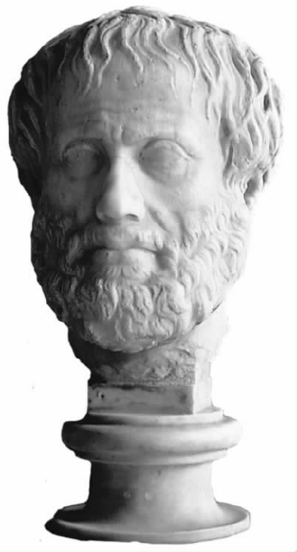

如果你在大学专攻哲学，便会发现必须学会一些技巧，了解一些论题，这样才能学好这门课。你要学一些逻辑思辨和批判性思维方面的课程，要学习形而上学、认识论（或许是科学哲学）、伦理学及政治哲学（或许是美学）方面的论题。你可能还要学一些哲学史方面的课程，而学习这种课程的方式几乎就是对古往今来那些属于“其他”传统的哲学家进行批判，尽管你对那些和“你”同属一个传统的哲学家更多地怀抱敬意。
古代世界情况没有如此大的分野。自从柏拉图学园创建以来，不同哲学传统的哲学学校便成为学习、教授和传承哲学的主要场所。富裕的家庭也许会请哲学家庭教师，这些家庭教师都在某个哲学学校接受过培训。每个学校都可归于某个特定的哲学传统，该传统中的某些文本会受到青睐（有代表性的为亚里士多德和斯多葛哲学文本）。在很早的时候，哲学课程便包括三个部分：逻辑学、物理学和伦理学。这种情形出现得很早，人们往往将其（没有说服力地）归于柏拉图的分类。虽然显而易见的是，柏拉图和亚里士多德在写作时头脑中都没有这样的课程结构；只是，这种结构更好地顺应了后来一些流派的利益，如斯多葛学派和伊壁鸠鲁学派。至此，我们已经讨论了该课程体系中伦理学部分的一个重要主题，也论述了被视为逻辑学一部分的知识学说，因为逻辑学曾被广义地解释为包括我们所称的认识论和语言哲学，当然还包括我们通常理解的更狭义一些的逻辑学，哲学课程还包括物理学，这在我们听起来再奇特不过了。
为什么逻辑学会变成哲学的一部分？这个问题自古以来便充满争议。有人认为逻辑学本身便是哲学的一部分，也有人认为逻辑学只是一种我们用来促进哲学学习的“工具”。无论怎样，我们都需要逻辑学知识来确保我们的辩论无懈可击，不给对手以任何反驳的机会，同时，帮助我们识破对方辩论方式中的漏洞。在古典哲学中，逻辑学具有去伪存真的作用。而逻辑学自身的发展常被认为可能会偏离哲学所关注的核心问题。
逻辑学是亚里士多德取得杰出成就的领域之一。在亚里士多德之前，没有系统的方法对各种辩论进行分类，从而帮助人们区分那些仅仅是看起来令人信服的辩论和通过有效推论得出正确结论的辩论（甚至今天也是如此，很多颇有影响力的人物将两者混为一谈，自己却引以为荣）。正是亚里士多德对有效辩论的概念加以系统化，建构了一个庞大的逻辑学体系。
亚里士多德逻辑学的核心观念是演绎法 ，希腊文是sullo-gismos。对此，他将之笼统地界定为：演绎是一种论证，即拥有了某些前提，则必然会产生某些结果，因为事物本来就是如此。更严格地说，演绎的结论是前提的必然结果。亚里士多德补充说，结论必须不同于 前提，因此他并非在探究当现代的逻辑学家认为“如果p，那么p”是个有效论证时他们的目标为何。亚里士多德还认为，结论的真实性必须来源于 前提的真实性，因此他也排除了那些无助于证明结论之真实性的冗余的前提。在这方面，他的观点同样与现代纯形式的推理观相左。关于亚里士多德的演绎法以及他的逻辑学的归类问题，研究者从现代形式逻辑学的角度展开了大量讨论（但没有结果）。
以现代眼光来看，亚里士多德逻辑学只是逻辑学的一小部分，因为尽管亚里士多德对演绎法的定义很宽泛，但他对演绎法的系统研究仅局限在一个非常狭小的范围内，即后来广为人知的亚里士多德的三段论。他认为肯定和否定的陈述具有这样的形式：在所有情形、有些情形或从不发生的情形下，谓项P“属于”或不“属于”主项S。（自中世纪以来，这些陈述采取了我们更为熟悉的形式：“所有S都是P”，“一些S是P”，“一些S不是P”及“没有S是P”。）亚里士多德最大的贡献是使用了图解式字母，这使他能够研究论证的形式而无需考虑其具体内容。亚里士多德系统地总结了这种方法，认为如果两个陈述采用了同一个形式，并享有一个共同的词项（“中”项），便会得出一个结论。有些这样的组合会产生有效论证，另外一些则不会。亚里士多德在说明哪些形式有效、哪些形式无效的过程中表现出高超的独创性。（他也开始建立一种“模态逻辑”系统，即一种由“必然地”、“可能地”等修饰的逻辑陈述，但不是很成功。）
至于为何亚里士多德使自己局限于此，人们作出了各种推测。比较可信的一种观点是，虽然他对这样的论证感兴趣，但是他最为关心的是为一种论证找到形式，这种论证类似他的一门完整的科学模式或知识体系。其中利害攸关的是各种事物间的关系，而且，尤其重要的是要具有普遍意义。涉及个体情况的论证在这一逻辑系统中是找不到位置的（尽管亚里士多德思考过关于指导行动的论证“实践”逻辑，但这一念头仅在他的头脑中一闪而过）。
亚里士多德暗示过一些观点，后来由他的学生德奥弗拉斯特斯加以发展。这些观点意在对一些论证予以系统化，在这些论证中要研究的是各陈述间的关系，而不是构成各陈述的词项间的关系。而真正的进步还要留给斯多葛学派，尤其是克吕西普。斯多葛逻辑关心的是肯定或否定某事的陈述或公理（ax-iomata）。复合陈述通过使用各种连接词，如“和”、“或者”以及“如果”等串起简单陈述而产生。斯多葛逻辑研究的是由前提和结论构成的论证，它们都为陈述。尽管也有区别，但大部分研究与现代的“命题逻辑”有重合之处。他们有五种基本的论证公式（字母P和Q代表陈述）：（1）如果P，那么Q，P；所以Q［熟称为“假言推理”（modus ponens）］；（2）如果P，那么Q，不是非Q；所以不是非P［“否定式”（modus tollens）］；（3）不是既P又Q，P；所以不是非Q；（4）或者P或者Q，P；所以不是非Q；（5）或者P或者Q，不是非P，所以Q。以此为基础，斯多葛逻辑以复杂而有力的方式得以发展。
和亚里士多德一样，斯多葛学派不仅仅对论证本身感兴趣。他们关心的是提出充当“论据”的论证，用他们的话说就是，“基于共识的前提，通过演绎推理揭示一个本来模糊的结论”。逻辑形式的研究是为了说明我们在知识方面的主张，在这种情况下，我们通过经验中达成共识的事物来认识“模糊的”或理论性的事物。
虽然伊壁鸠鲁及其追随者表面上将形式逻辑贬低得一文不值，认为只是在浪费时间，但他们也着力研究所谓的“符号”；基于这种符号，我们从感知之事推论出超越感知之事，因此他们在某种程度上与其他流派一同参加了关于逻辑的讨论。
学习古典哲学的学生（除非他们是伊壁鸠鲁派）会学习亚里士多德和斯多葛逻辑学。虽然对于诸如哪一个更重要之类的问题人们各持己见，但这两种逻辑还是被视为互相补充。由于历史原因，斯多葛逻辑学和早期的斯多葛主义在古代末期便失传了，而亚里士多德逻辑学则不仅得以幸存，还渐渐被视为逻辑学方面的全部内容。中世纪亚里士多德逻辑学得到全面的阐述，康德认为它是完美的；直到20世纪初期，弗雷格和罗素重新发现了命题逻辑，才改变了亚里士多德逻辑学在哲学教学大纲中至高无上的地位。
哲学课程中的第三个部分“物理学”听起来似乎已经不再属于哲学范畴。部分是因为该术语的含义缩小了，而该词最初的含义是对自然 （或称phusis）的研究。自然是指存在的万物，或全世界（包括作为其一部分的人类）。因此对自然的研究可以囊括众多截然不同的方面，“物理学”也涵盖了很多方面的研究，但对我们来说，这些研究已经分成了不同的主题并以不同的方式讲授。
其中一种研究意在解释我们周围令人迷惑不解的事物。如何解释太阳和月亮的运行规律？关乎农民生计的四季交替是如何产生的？为什么会发生飓风、地震和日食月食？在古代，这些问题被看作哲学家们所从事的自然研究的一部分。然而随着哲学的发展，尤其是亚里士多德之后，哲学家们逐渐对这些问题失去了兴趣，因为尽管与其相关的理论不胜枚举，人们却找不到明确的方式进行取舍，由此也没有令人信服的方法来证明某种答案是正确的。这些问题变成了人们宴会餐桌上的谈资而不再是时新的哲学问题。当然，且不论科学的弊端，科学的进步在现代社会已经为我们提供了这些问题的明确答案。它们不再是高深莫测的哲学问题，而古代关于这方面的讨论现在也常被纳入科学发展史。
尤其在亚里士多德之后，自然研究领域的缩小还与大量的独立于哲学的科学知识的发展有关。尽管以现代的标准衡量当时的医学还很落后，但医学已经发展成为一门专门学科，并产生了不同的流派。然而，还是数学科学取得了最大的进步，欧几里得的著作《几何原本》为其最高成就。阿基米德不仅是一个伟大的数学家，还发展了天文学并躬身应用了诸如工程学等分支学科。科学史家们有时会悲叹高深复杂的技术理念竟被用于琐碎的用途。亚历山大的赫伦描述了一台机器，它能够使塑像自动地向祭坛倒酒。但是关于古代经济状况的基本事实阻碍了诸如工业技术发展的任何趋势。至于今人将科学转化为技术的做法能否带来了明显的福祉还要另当别论。
然而，自然研究或者古代意义上的“物理学”涵盖的不仅仅是各个变窄了的科学研究领域。从一开始，“自然”一词便指“所有的存在”，即任何有待研究的事物。因此其内容之广博足以与我们今天所说的形而上学相符。变化是我们这个世界必备的特点吗？究竟什么是变化？我们生存的世界上，什么才是真正的存在，即那些在一种关于世界实际存在方式的可靠观点中具有根本意义的事物？像动物和人类一样有生命的事物是这种基本的存在吗？它们似乎是变化的对象，即变化发生于其中的物体。但是如果真实的存在就是变化的对象，那么也许我们在探索什么是真实的存在时就不应该局限于有生命的事物，而应该把所有作为变化对象的事物都考虑在内。也许这是构成它们的物质。诸如此类的问题是许多所谓前苏格拉底学派哲学家及亚里士多德哲学研究中的核心问题，他们将自己的观点掺入其中，许多研究成果为我们所参考。这些问题不属于现代科学的范畴，而属于被统称为形而上学的更为抽象的哲学研究领域。亚里士多德的“物理学”和他的“形而上学”间的分界线则经常模糊不清。
当对世界进行整体认识时，自然会出现这些问题。鉴于现代形而上学的研究范围更窄，它们常被作为一个相对独立的领域进行研究。因此我们倾向于把柏拉图的“形式论”看作，比如说，与我们所说的“物理学”或自然研究无关的一种形而上学理论。然而在古代，它常被看作是柏拉图“物理学”或关于世界万物的理论的一个方面。在《蒂迈欧篇》中，柏拉图对此进行了最初的研究；这部对话集今天不是很受欢迎，但是它包含了柏拉图的宇宙观和他对宇宙及其结构的描述。
柏拉图的“形式说”
柏拉图没有明确的关于形式的理论。在一些对话集，尤其是《斐多篇》、《理想国》、《会饮篇》、《费德罗篇》和《蒂迈欧篇》的一些篇章中，或通过辩论、或通过另外一些富于表现力的暗喻，柏拉图以不同的方式讨论了我们常常称为“形式”的条目，但是他并未对此给出标准的术语。
不同于我们经验中的美丽事物，柏拉图提出了“美本身”的观点，这种美不受环境、时间和视角的左右。不同于我们经验中美丽的人和物，美本身永远是美丽的。这一观点因表示价值的术语如美、正义 和善 ，以及数学术语如双倍 和一 半 而得到深化。人们无从知晓柏拉图的辩论如何能超越反义术语的范畴。尽管《理想国》中的篇章引起广泛的歧义，柏拉图并不认为每个普通术语均拥有一种形式。形式不是之后所谓的共相。它仅与事物的客观本性同在，可经由智性去把握。形式总是离不开运用大脑去推理，而不是一味地依赖你的感官体验。论述形式的名篇强调了这种对比：一方面愚钝地假设人类经验所留下的印象便是存在之事物，另一方面批判地利用理性来把握现实，即把握形式，而这只有孜孜以求的人才能做到。
在对话集《巴门尼德》中，柏拉图表明自己已意识到，在他有关形式的论著中具有明显的不一致性。然而，他认为要做的不应是放弃形式，而是两个方面继续争辩直到采取一种防御姿态。他坚持了这种精神，从未成功地提出一种确定的形式论。后来的哲学家常常简化这些问题，但是亚里士多德和20世纪后期的哲学家对柏拉图支持和反对形式之存在的不同辩论均进行了研究。
对古代“物理学”或形而上学的学习，其内容很大程度上取决于你所追随的哲学传统。例如，伊壁鸠鲁派认为，物理学和形而上学的作用仅在于对其问题的错误回答导致我们心烦意乱，闷闷不乐；而对这些问题本身感兴趣是在滥用时间，还不如更直接地去学习如何生活得更好。斯多葛学派认为使形而上学关于世界的主要观点回归正轨很重要：冥冥之中自有天意，理性地认识到这一点就会明白世间万物如何极尽其善。但对于因细节自身的缘故而去纠正细节这一点，他们的兴趣比伊壁鸠鲁派强不到哪去。
在古代各种哲学流派中，亚里士多德这一派的传统对自然研究的定义最为宽泛，最为包容。众所周知，亚里士多德在哲学家当中对成因和解释最为关注。并且，虽然对掌握现代科学知识的人来说，亚里士多德对自然的描述已不再能让人接受，但其主旨中所表现出的对世界万物的回应仍值得我们高度尊敬。
亚里士多德认为，自然是由具有本性之物构成的世界。何谓具有本性？即事物的变化和被改变是有内在源头的。认识狮子只有通过观察狮子本身以及它们与周围环境和其他物种间的关系来实现。相对而言，要了解一件人工制品，例如盾，我们则必须参考盾本身以外之物，即人类制盾时进行的设计。有本性之物首先是有生命的，如动植物，包括人类。亚里士多德认为，自然从一开始便不只是所发生之事，即世界万物作为一个无差别的整体的存在（密尔及19世纪以来的其他哲学家亦持此观点）。自然早已是一个由自我组织、生存方式各具特色的事物组成的世界，了解自然即是了解这些事物属于何种生命。自然界是活跃的，是一个活跃并不断变化的事物组成的系统。亚里士多德关于自然的观点根本不同于现代早期出现的那些为人所不齿的观点，这些现代人认为自然是被动的，有待于科学家去驾驭。
亚里士多德更没有表达过另一种更为臭名昭著的观点：自然有待于人类去开发利用。他认为技能和专长是自然的延伸。他把农民种植庄稼、烧火做饭看作是人类消化过程的准备阶段，这个过程将不能吃的变成能吃的食物。他从没想过技术可能会侵占自然。（当然部分原因是他还不知道会有如此复杂的技术能够做到这一点。）他也从来没想到人类的行为会打破自然既有的平衡。人类捕鱼狩猎作为食物就像这些兽与鱼彼此猎食或食用其他植物一样，这些构成了自然界自我调控系统的一部分。可悲的是，亚里士多德的很多观点在今天听起来必然显得怪异，如今人们强行介入自然秩序引起了灾难性的后果，生态系统被破坏，很多物种遭到灭顶之灾。亚里士多德认为包括人类的所有物种已经存在并将继续存在下去。我们要做的就是去理解万物是如何和谐共存的。为此，在一篇著名的文章中他为研究“低级”动物而辩护，认为这同研究天体一样高尚，“因为只要是自然的便是奇妙的”。
亚里士多德认为，我们之所以要了解包括人类自身在内的自然，是因为这种了解欲本身也是自然的。可是，这不成了循环论证了吗？是的，但这无伤大雅。在现代意义上说，亚里士多德理论是自然主义的，他认为人类认识自然的过程本身就是自然的一部分。这个过程并非神秘地独立于认识对象之外。哲学，包括自然研究，皆始于人类的好奇；我们为周围的事物所困惑和吸引，直到找到恰当的解释我们才会心满意足。因此寻求解释仅限于对自然的解释本身，亚里士多德认为如果我们理解自然是为了剥夺自然以求达到自己的目的，那么这种行为就既愚蠢又不着边际。因此，虽然自然研究的不同领域所适用的方法各不相同，但是我们对人类自身进行研究以求解疑释惑的道理与对其他生物或非生物进行的研究是相同的。
解释即是找出事物之为事物的成因 。亚里士多德认为有四种基本途径来实现，即他的“四因说”，包括他所称的形式因、质料因、动力因和目的因，即事物存在的目的。
亚里士多德的“四因说”
针对在他看来之前哲学家的狭隘性，亚里士多德认为研究自然万物时应该借用四个“成因”。他所指的是我们用于解释自然界事物及其变化的各种方法，并认为并非只有唯一的解释模式，而有许多彼此相容的解释。虽然亚里士多德的理论是关于世界的存在方式，而不仅仅是我们对世界的解释方式，但这四个所谓的“成因”是指不同的方面，可以纳入亚里士多德所说的解释自然的四种基本模式。
首先是质料因或质料，即事物的物质构成，它极大地限定了事物的属性和功能。第二是形式。亚里士多德以人工制品为例，认为其形式便是其形状；而对有生命的物体而言，其形式则复杂得多：大体上，它是指该生物存活的方式，这种方式界定了该生物的实质。例如，橡树的形式便是对为何该树仅在一定的气候中生长、为何橡子能生长为一棵橡树 作出的解释。第三是动力因，那种引起变化的因素。第四是目的因或目的，即该事物或过程的目的为何，用来说明该事物的功能。
现代因果论的目的和假说与亚里士多德的截然不同，仅把他的动力因作为一个成因（而且仅用于有限的条件下）。
亚里士多德意识到想要从目的论上作出解释，即解释目的因或存在的目的会引起争议。他知道之前的思想家认为自然的存在毫无目的，人类及其生存的世界只是偶然事件的附带产物。例如，有人认为动物的牙齿是某些物质偶然组合在一起形成的，而这些物质有些适合动物的需要，有些则不适合。
与通常一样，亚里士多德并不认为这种说法完全 错误；我们确实需要合适的身体结构。但这本身并不足以说明为什么我们总是 （或几乎总是）发现动物相当适应它们的生活，而且身体各部分的结构恰好具有一定的功能。以牙齿为例，前部常是锋利的门齿，用来撕咬食物，后部是粗钝的臼齿，用于咀嚼。像这样完美的安排在动物身上随处可见。除非是哪儿出错了，否则没有哪个动物会挣扎于身体结构方面的某些错误安排（比如说臼齿长在了前面）。亚里士多德认为，偶然性在解释为何动物对周围环境和生活方式具有很强的适应力时显得很不充分。他由此得出结论，我们的解释应该考虑事物存在的目的。但他并不认为这种解释会适合万物，例如马和骆驼的存在就没有什么目的可言。亚里士多德所关心的是如何对动物身体的各部分作出解释。例如，心脏是用来将血液输送到身体其他部位，而血液则是为了给身体提供营养。
亚里士多德的观点在今天看来颇为有趣。因为，一方面我们认识到他的错误，另一方面又看出就当时而言他的观点比别人的更有道理。那时，人们对地质年代一无所知，又没有一种可信的机制来解释偶然性会引起这种（几乎）普遍的良好适应力，因此亚里士多德有充分的理由认为这种很强的适应力并非仅仅靠偶然性便能解释的。在达尔文的著作问世后，我们才明白为什么我们没有因为亚里士多德所强调的那类理由而被迫接受了亚里士多德的观点。
亚里士多德的目的论方法使他提出了最能引起共鸣的观点。他认为，树根对于植物而言就像是动物的头脑；但这并非是说植物是倒着生长的，因为上下之分取决于我们要讨论的对象。螃蟹是唯一横着爬行的动物，但在某种意义上说，它是在前行，因为只有这样他们位置独特的眼睛才能看见前进的方向。在这些以及很多其他情况下，亚里士多德摆脱了人类惯有的思维方式来思考诸如营养和运动等问题，他从其他物种本身的角度出发去观察它们如何良好地发挥功能。
亚里士多德的目的论并非指自然万物之目的是计划的结果——事实上，他认为那样不过是将人类自身的意愿强加于自然之上，是按我们的意象对自然荒诞而自负的扭曲。但是亚里士多德的目的论并不是古代世界唯一的目的论。
在对话集《蒂迈欧篇》中，柏拉图将宇宙描述成是由上帝创造的；上帝就像一个制作工艺品的匠人一样创造了这个世界，赋予良莠不齐的万物以形式与秩序。柏拉图认为上帝创造世界所用之材料本身就是有缺憾的，甚至是冥顽的，因为尽管上帝造物的计划至善至美，我们的世界却仍存在着败笔和邪恶。
柏拉图在作出这番描述时，究竟是认为上帝造物确实发生了还是仅仅借此分析事物的存在方式，对此古代的人们一直莫衷一是。但是可以肯定的是，在他的整体构想中世界的产生并非毫无目的，而是为了实现其创造者的设计意图。不仅如此，这种整体计划论不仅解释了宇宙学的基本规则，还说明了一些十分具体的细节问题，尤其是与人类相关的问题。例如，人之所以直立行走、人的头脑的形状之所以大致呈球状，就是因为人是有理性的，这不同于其他动物。正如我们可能意料到的，这类解释完全是异想天开。
但是《蒂迈欧篇》并不是严肃的宇宙学著作，而只是讲述了一个“似有其事的故事”，这正是柏拉图认为恰当的表述方式；全篇风格诗意浮华。所进行的叙述也显然“无所不包”，讲了根据几条十分笼统的原则所得出的结果。柏拉图无意解释我们从经验中观察到的现象，他本人对这种观察也毫无兴趣。
斯多葛学派继承了柏拉图关于上帝造物的观点，并将其进一步发展，但方向有所变化。斯多葛学派对于上帝的理解不同于柏拉图。他们认为，上帝并非世界的缔造者，人们应该从更加非人格化的角度来理解上帝。上帝只是世界万物理性的组织形式，因此人们不应以人的模式为基础来思考上帝（尽管斯多葛学派承认信奉诸神的大众宗教朦胧地反映了世界由理性和才智架构而成）。
因此，不同于柏拉图把上帝看成一个能工巧匠的观点，斯多葛学派更乐于寻找证据以证明世界是设计和理性规划的产物。他们否认世界是偶然事件和偶然力作用的结果，认为这有悖情理，他们声称其中的道理就像认为将字母表的各个字母随意分布就能创作出一首诗一样。（请注意这种观点不同于亚里士多德的观点：亚里士多德否认偶然事件可以带来惯常的良好适应力，而斯多葛学派否认偶然事件可以产生精致的设计。）
斯多葛学派关于世界存在设计的一些观点要诉诸自然物纯粹的复杂性。例如，其中一个观点认为，如果把一个像钟表这样复杂的机械装置拿给对其不甚了解的人看，他们仍会认为这是某个理性存在者的造物。因此，在功能上表现得比人工制品更为复杂灵活的自然物必然是理性的产物。这种从宇宙万物中折射出来的理性显然要比人类的理性高深得多。（这一论点与达尔文之前基督教思想家中相当常见的“设计的论证”惊人地相似。）
其他的观点则诉诸世界组织结构的复杂性——世界被看成一个庞大的生态系统，其中各部分相互依存。斯多葛学派还诉诸动物对环境的适应以及动物之间的依存关系，但这种兴趣并非针对这种方式本身，而在于它们说明了世界是一个组织完善的整体。
因为把世界看成是设计好了的，斯多葛学派常常把它比作一座房子或一个城市；又因为房子或城市显然是为其居住者而设计的，所以以下这一点便显而易见：斯多葛学派认为世界被理性地设计出来是为了使有理性的存在，即神和人受益。因此，对人类而言，世界上包括动植物在内的其他一切都是为了人类的利益而设计的。这一观点导致斯多葛学派主张人类中心说的世界观，谷物、橄榄、葡萄都是人们用来果腹的，羊毛被人们用来蔽体，牛用来为人们拉犁耕地等等。这种世界观几乎必然会扼杀我们在亚里士多德身上看到的对自然奥秘的好奇心，并导致人类对其他自然万物的掠夺心态。与之形成强烈反差的是，斯多葛学派对人类的态度是人道的，并不考虑他们的社会角色。
在古代各流派中，伊壁鸠鲁是唯一一个否认能对自然作出任何目的论上的解释的人。他认为，无论是作为一个整体的世界还是其中的任何个体，自然界的存在毫无目的 。
他十分肯定地断言，我们的世界，以及在无限的时间长河中存在过的很多个世界都是空荡的太空中原子偶然碰撞的产物。他认为，如果时间允许的话，这个解释是充分的。我们已经看到，鉴于古代文化中其他关于世界的看法的状态（如未对宇宙的实际存在时间作任何说明），伊壁鸠鲁的观点在当时必然不如对今天的人们更具说服力。古代思想中目的论形式繁多的原因之一便是各家之言都不能使其他流派信服。
伊壁鸠鲁同样反驳了对立的观点，他认为如果人们以毫无偏见的眼光去观察世界就会发现它不是设计或至少不是极完美设计的产物。例如，世界上大部分地区不适合人类居住，人类生存的努力常常受到威胁，自然因素的无常（干旱、飓风等）、恶劣的环境以及其他物种的侵犯都让人类的生存变得非常艰难。婴儿时期的无助和自然武器的缺乏使人类在与其他物种的生存竞争中并不占优势，诸如此类。
只有针对上天创造世界是为人类谋福利的观点，伊壁鸠鲁的反驳才是有力的。即便如此，对方同样作出了回应：人类遭遇的困难也许是因为对世界进行理性设计时所用的原材料太低劣。而伊壁鸠鲁从未真正意识到，倘若自然的产生没有任何目的，他便很难解释原子的偶然碰撞会导致各物种对环境惯常的 良好适应力。
这些古老的争论被大大地简化了。早在古代，犹太人和基督徒就接受了柏拉图在《蒂迈欧篇》中阐述的哲学观点，认为他的解释恰好与《创世记》中上帝造物的故事一致。这不足为奇，因为犹太基督徒信仰的上帝便是造物主，这个造物主意在使这个世界良好运转。另外，人类在世界上受到特殊的眷顾。中世纪，设计论曾一度盛行：世界万物，包括人类（其实尤其是人类）都是由上帝设计并且创造出来完成自己在世界上的使命的。人类是这个计划的特殊受益者，所有其他创造物都是用来为人类服务的。
亚里士多德的观点在中世纪被再次发现以后也被纳入了设计论，因为亚里士多德的目的论符合神学的一种解释框架，即世界是由设计师上帝创造的。而亚里士多德本人更为微妙的观点则被忽略了。这一时期似乎只剩下两种观点，即世界是神圣设计的结果或世界仅是偶然事件的产物。后一种观点直到文艺复兴时期才再次得到重视，此时伊壁鸠鲁的观点再度盛行并激发一些哲学家抛弃了整个中世纪的世界观。
中世纪的世界观包括了亚里士多德的哲学思想，而且很大程度上是以这些思想为基础的。但在发展过程中，他的思想却被大改特改。亚里士多德的自然观，包括他关于自然万物的目的论，都成为一个庞大的神学体系的一部分。在这一过程中，随着他的观点被凝固为一种体系并日益被视为一个完整的、无所不包、无所不知的稳固的体系，他本人那种试探性的、合作的研究方法则被渐渐淡忘。中世纪诗人但丁将亚里士多德称为“智者的导师”——换言之，无所不知的大师，这与亚里士多德本人带着好奇与惊异的探索精神相去甚远。
文艺复兴时期的新学取代了亚里士多德主义体系，但由于这一思想体系在大学中已经根深蒂固，因而它的影响惊人地又持续了很长时间，并且变得自我封闭，保守地排斥任何新思想。曾被罗马天主教奉为至尊的亚里士多德的伦理和政治思想也遭遇了同样的命运。对亚里士多德思想的僵化理解同样导致了人们简单地摒弃他的思想，而不去细致地挖掘它们。早在亚里士多德被奉为伟大的权威的时代，一些颇有见地的思想家就经常抵制这种权威，而与此同时也摒弃了亚里士多德本人的观点。由于亚里士多德的著作十分令人费解，对其思想的敌对态度开始在各种书中传播开来，那些从来没有真正将亚里士多德作为一个哲学家来研究的人也就轻易接受了这种态度。直至今天，仍可经常看到一些人对亚里士多德持有偏执的敌意，他们对于亚里士多德的了解仅限于断章取义的几句话，并简单地视其为应当摒弃的权威。
这只是后世传统脱离原本的语境，对古典哲学思想断章取义、嫁接挪用的一个典型例子。有时这种做法是令人鼓舞的，会引发新的卓有成效的思考，比如19世纪对柏拉图《理想国》的政治解读（见第二章）以及中世纪大部分时期对亚里士多德的理解。但是倘若这种解释性传统延续过久（尤其是没有与之抗衡的严肃观点）而变得僵化和教条化时，结果可能会显得自相矛盾，并导致对这些观点的敌视和不假思索地排斥。这会更加阻碍我们回归原作，并从我们自己的视角进行解读。
亚里士多德与权威
“对真理的探索一方面很难，另一方面也很容易。这一点从以下事实便可看出，即没有人能完全掌握真理，同时，也没有人与真理彻底失之交臂。事实是每个人对事物的真实属性均有一定程度的认识；虽然作为单个的个体，他们对真理的贡献甚微或几乎是零，但当所有的贡献集合起来便有了可观的积累。因此，由于真理像一个容易击中的目标，没有人会失手，从这个角度说探索真理是容易的；但我们要掌握整个的真理，而不是某个特定的部分，这便是难点所在……我们应该感恩，既要感谢那些我们可能同意其观点的人，又要感谢那些表达了较为肤浅观点的人，因为通过展示思想的力量，这些观点也是有所贡献的。”
亚里士多德，形而上学，第二卷，第一章
“当一个经院哲学家跟我讲亚里士多德 曾经讲过时，我只会设想他的用意是让我怀着世俗对那个名字所拥有的敬意和屈从来接受他的观点。对那些习惯了屈从于那个哲学家的权威而放弃自己判断的人这会产生立竿见影的效果，因为往往不可能先考虑到他的为人、作品和声望。习俗在亚 里士多德 这个名字和一些人心中的赞同与敬意之间搭建了非常紧密而又即时的联系。”
乔治·贝克莱主教

图6 亚里士多德像：严肃认真